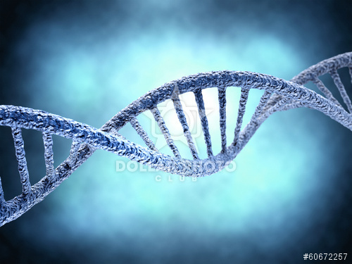

Posted by Owner | Filed under templates, internet
Artificial Neural Networks, more commonly referred to as Neural Networks, are networks of many simple processors that have a small amount of local memory. These processors, otherwise known as "units", are connected through numerous communication channels that carry encoded numeric data. The units operate only on their local data and on the inputs they receive via the connections. Historically, much of the inspiration for Neural Networks came from the desire to produce artificial systems capable of sophisticated, perhaps even intelligent, computations similar to those of the human brain.
Most Neural Networks have some sort of "training" rule whereby the weights of connections are adjusted on the basis of data. This allows Neural Networks to "learn" from examples and exhibit the capacity for generalisation beyond the training data. Consequently, Neural Networks can be extremely useful for pattern recognition, in that they can be trained to detect complex relationships between inputs even when the statistical distributions of those inputs is unknown.
Read more • Comments (3) | March 16, 2015
Posted by Owner | Filed under templates, internet
The entire research area of Genetic Algorithms, as well as that of Evolutionary Computing, was inspired by Darwin's theory of natural selection and survival of the fittest. Genetic Algorithms are problem-solving programs that try to mimic the way large populations solve problems over a long period of time, through processes such as reproduction, mutation, and natural selection. To emulate the natural phenomenon of evolution, a Genetic Algorithm program creates a population of candidate solutions to a particular problem, and through a process of random selection and variation, each generation of the program improves upon the quality of the solution.
Consequently, Genetic Algorithms promote the evolution of solutions by using genetically based processes. Unlike natural evolution, the program is usually able to generate and evaluate thousands of generations in seconds.
Read more • Comments (7) | March 15, 2015